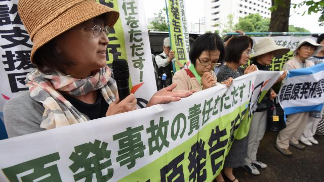

Las Vegas shooting.

At least 58 people were killed and more than 500 were hurt Sunday night when Stephen Paddock rained gunfire on concertgoers in Las Vegas, the deadliest mass shooting in modern US history.... Lees meer.
Trump doles out praise as Puerto Ricans despair.

Earlier in the day, he offered his administration an A+ grade for its disaster relief efforts in Texas and Florida, adding that Puerto Rico was right up there with them. In his visit to Calvary Chapel, Trump applied his typical showmanship to the normally staid task of distributing emergency supplies. "I've never seen that before," he remarked, as he held aloft canned meat. He lobbed rolls of paper towels into the crowd as if he were tossing out free t-shirts at a football game... Lees meer.
Tien doden door bosbranden in Californië.

Door hevige bosbranden in de Amerikaanse staat Californië zijn tien doden gevallen. De autoriteiten verwachten dat dit aantal nog gaat stijgen. Daarnaast zijn meer dan honderd mensen gewond geraakt en meer dan twintigduizend mensen geëvacueerd. Dat melden de autoriteiten van Californië...Lees meer...
Rechtbank stelt overheid Japan weer aansprakelijk voor schade Fukushima.
Een Japanse rechtbank in Fukushima heeft dinsdag besloten dat de staat en het elektriciteitsbedrijf Tokyo Electric Power (Tepco) aansprakelijk zijn voor een schadebedrag van zo'n 500 miljoen yen, omgerekend zo'n 3,7 miljoen euro, na het kernincident in 2011.Lees meer.